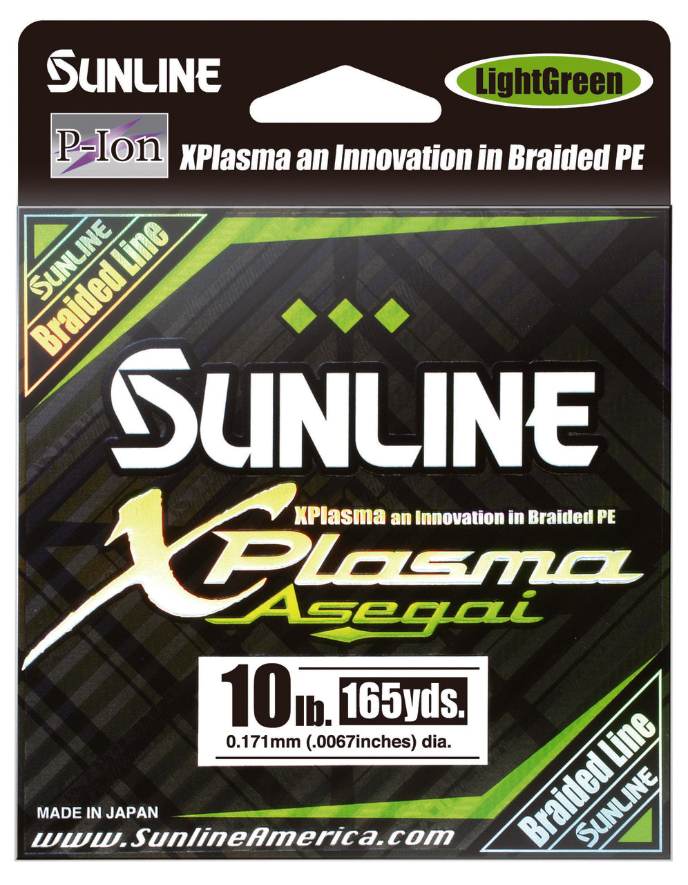

Sunline Xplasma Asegai Braid
Diameter chart, reel capacity & backing guide

Xplasma Asegai is Sunline's eight-strand PE braid with a plasma-treated surface. The US range includes strengths such as 16 and 18 lb. Choose your strength to see its diameter, available spool lengths and estimated reel capacity.
- Construction
- 8-strand PE braid; Xplasma treatment
- Listed strengths
- 8-100 lb
- Line type
- Braid main line
Is Xplasma Asegai right for your setup?
Asegai is an eight-strand braid option for anglers who want a low-stretch main line and will choose a leader for the presentation. Lighter diameters are worth considering for appropriately matched spinning tackle; heavier choices need the rod, lure and cover to justify them. Decide how much usable braid you need before filling the rest of a deep spool with backing.
How much Xplasma Asegai will fit?
Calculated estimates, not measured fills. Stop at the reel manufacturer's fill level even if some line remains.
Sunline Xplasma Asegai diameter chart
Current Asegai US variants; 6 lb chart-only entry excluded. Separately published inch/mm values are retained, including 30 lb.
| Strength | Inches | mm | Spools (yd) |
|---|---|---|---|
| 0.006 | 0.153 | 165, 330, 600 | |
| 0.0067 | 0.171 | 165, 330, 600 | |
| 0.0074 | 0.187 | 165, 330, 600 | |
| 0.0082 | 0.209 | 165, 330, 600 | |
| 0.0088 | 0.223 | 165, 330, 600 | |
| 0.0095 | 0.242 | 330 | |
| 0.012 | 0.296 | 165, 330, 600 | |
| 0.015 | 0.382 | 165, 330, 600 | |
| 0.0165 | 0.418 | 165, 600 | |
| 0.0213 | 0.540 | 165, 1000 |
Choosing your Xplasma Asegai strength
The 16 and 18 lb options are .0082 and .0088 inch. They should not be silently relabelled 15 or 20 lb. Use the exact strength shown on the package, especially when comparing another braid at a similar label.
At 30 lb, Sunline publishes .012 inch and .296 mm as separate chart values. They are not an exact unit conversion. The calculator consistently uses the catalog inch value, so the chart must preserve that precision.
The 50, 60, and 100 lb entries belong to a very different setup scale from the lighter sizes. A high-capacity result does not establish that your rod, reel, or drag is appropriate for heavy braid.
This is a specification-based setup guide, not a hands-on Xplasma Asegai performance test.
Want a guided recommendation?
Continue in the Setup WizardSame pound test, different diameters
At your selected strength
Loading diameter comparisons...
What changes with another line?
Nearby diameters in the line database
| Line | Strength | Inches | Difference |
|---|---|---|---|
| Loading line database... | |||
Backing, working line & leaders
Check the 20 lb length
Current 20 lb US variants use a 330-yard package. Do not assume a 165-yard package exists just because another strength offers one.
Do not buy from a chart row alone
A 6 lb diameter remains on the manufacturer's chart, but no assigned current 6 lb package was present in the source checked for this guide. It is excluded from the selectable strengths until a package is verified.
Secure the base layer
Use the reel manufacturer's braid-attachment method, with mono backing where appropriate. Apply steady winding tension and inspect the final fill rather than forcing the entire calculated amount onto an already full spool.
How Much Fits on These Reels?
Estimated full-spool capacity for the Xplasma Asegai strength selected above, with no backing. These are calculated examples, not physical tests or recommendations for every pairing.
Loading capacity estimates...
Xplasma Asegai questions, answered
Is Asegai the same as SX1?
No. Asegai is a separate eight-strand Xplasma product. Some diameter values overlap, but that does not make the products interchangeable in construction or handling.
Why are 15 and 40 lb missing?
Those legacy catalog entries are not supported by the current Asegai US variants. This page offers only chart strengths with verified packages.
Will a surface treatment change the calculator formula?
No separate performance multiplier is applied. ReelCalc uses the published diameter and reel references, not an assumed capacity bonus for the treatment.
Specifications & sources
Specifications checked 2026-09-13. Manufacturer chart inch/mm pairs transcribed separately; assigned product code variants verify strength-specific package lengths. Check the actual package when buying older or imported stock. Product imagery identifies the model, not every selectable strength.
Calculations use the catalog's listed inch diameters. Published inch and millimeter values may differ slightly because of rounding.
- Official Sunline Xplasma Asegai specifications Manufacturer material, strength, diameter, and package evidence.
- Manufacturer diameter chart Published line diameter pairs checked visually against the catalog.